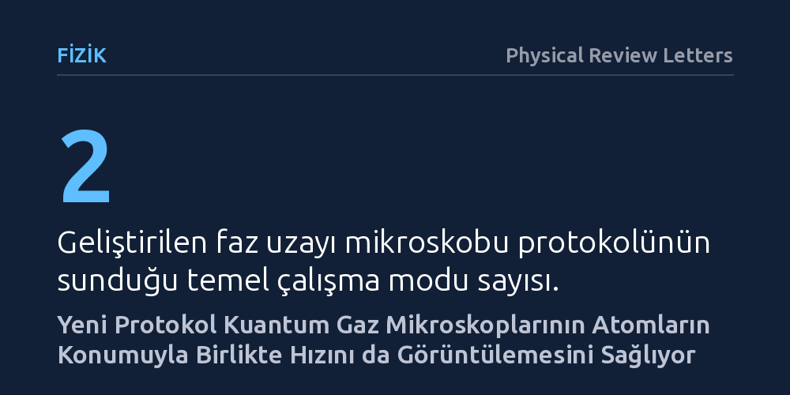

FIZIK · Physical Review Letters · 2026-10-25
Araştırmacılar, kuantum gaz mikroskoplarının yalnızca parçacık konumunu görebilme sınırını aşmak için atom momentumunu yardımcı serbestlik derecelerine eşleyen yeni bir protokol geliştirdi. Bu yöntem sayesinde, aşırı soğuk atomların hem konumları hem de momentumları faz uzayında eşzamanlı olarak görüntülenebiliyor.
Kuantum parçacıklarının hem konumunu hem de hızını aynı anda gözlemlemenin imkânsız olduğu algısını esneterek, kuantum gürültüsünü akıllıca paylaştıran yöntemlerle kuantum gazlarının çok daha kapsamlı haritalanabileceğini gösteriyor.

Aşırı soğuk atomlarla çalışan fizikçiler, optik ağlar içine hapsedilen atomları tek tek görüntüleyen kuantum gaz mikroskopları sayesinde atomik düzenleri benzeri görülmemiş bir netlikle inceleyebiliyor. Bu mikroskoplar, parçacıkların mikron altı mesafelerde nasıl dizildiğini ve birbirleriyle nasıl etkileştiğini doğrudan fotoğraflayarak kuantum simülasyonlarında çığır açıcı adımlar atılmasını sağladı. Ne var ki mevcut cihazların çok temel bir kısıtı bulunuyordu: Elde edilen görüntüler parçacıkların yalnızca nerede durduğunu gösteriyor, nasıl hareket ettiklerine yani momentumlarına dair hiçbir bilgi vermiyordu.
Kuantum mekaniğinin temelini oluşturan Heisenberg belirsizlik ilkesine göre, bir parçacığın hem konumunu hem de momentumunu sınırsız bir kesinlikle aynı anda ölçmek imkânsızdır. Klasik mikroskoplar tüm hassasiyetlerini konum ölçümüne harcadığı için atomların hız bilgisi tamamen karanlıkta kalıyordu. Oysa bir kuantum gazındaki akışkanlık özelliklerini, kuantum girdaplarını ve egzotik faz geçişlerini tam olarak anlayabilmek için atomların uzaydaki dağılımı kadar hız dağılımını da bilmek gerekir.
Araştırmacılar bu temel engeli aşmak amacıyla, atomun hareket bilgisini doğrudan ölçmek yerine onun iç serbestlik derecelerine aktaran yeni bir yöntem tasarladı. Geliştirilen bu teorik protokolde, kuantum mekaniğindeki pozitif operatör değerli ölçüm (POVM) yaklaşımından yararlanılıyor. Bu yöntemde manyetik alan gradyanları ve optik alanlar kullanılarak atomun momentumu, atomun farklı iç enerji ya da spin seviyelerine eşleniyor.
Protokolde tek boyutlu atomik sistemler, manyetik bobin eksenine 45 derecelik açıyla yerleştirilen manyetik düzenekler ve çeyrek periyotluk harmonik salınıcı evrimleri üzerinden inceleniyor. Böylece momentum uzayındaki dağılım konumsal bir kaymaya dönüştürülüyor ve mikroskop dedektörleri doğrudan konumu okurken gerçekte momentumla harmanlanmış bir veriyi kaydetmiş oluyor. Alkali atomların lazerle uyarılması sırasında oluşabilecek saçılma kayıpları ise seviyeler arasındaki küçük dönüşüm açıları sayesinde asgari düzeyde tutulabiliyor.
Geliştirilen protokol araştırmacılara iki farklı çalışma modu sunuyor. Bunlardan ilki olan Husimi-Q faz uzayı mikroskobu modunda, atomların konumu ve momentumu eşzamanlı olarak ölçülüyor. Kuantum mekaniğinin kaçınılmaz ölçüm gürültüsü konum ile momentum arasında dengeli biçimde paylaştırılıyor. Makalede belirtildiği gibi, "yeni yöntem kuantum gaz mikroskoplarının atomların yalnızca nerede olduğunu değil, nasıl hareket ettiğini de ölçmesini sağlıyor." Böylece araştırmacılar, faz uzayında negatif olasılıklar barındırmayan net bir olasılık haritası elde edebiliyor.
İkinci seçenek olan ortalama modlu faz uzayı mikroskobunda ise araştırmacılar uzaysal olarak yerelleşmiş momentum yoğunluğu ortalamalarını ve bunların yüksek dereceden momentlerini çıkarıyor. Bu modda tekil kuantum belirsizliği sınırına takılmaksızın, çok sayıda ölçümün ortalaması alınarak keyfi uzaysal çözünürlükte yerel momentum yoğunlukları ve kinetik enerji dağılımları haritalanabiliyor. Böylece sistemin kinetik enerji yoğunluğu yerel ölçekte doğrudan hesaplanabilir hale geliyor.
Bu teorik çalışma, soğuk atom laboratuvarlarında yaygın olarak kullanılan kuantum gaz mikroskoplarını birer faz uzayı analiz aracına dönüştürmek için somut bir çerçeve sunuyor. Özellikle iki boyutlu Bose-Einstein yoğunlaşmalarındaki süperakışkan girdapları, kenar akımları ve topolojik durumlardaki yerel akışlar, artık sadece atom eksikliği olarak değil, etraflarındaki hız girdaplarıyla birlikte doğrudan görüntülenebilecek.
Çalışmanın en büyük değeri, karmaşık kuantum çok cisim sistemlerini tanımlamak için gereken mikroskobik veriyi ikiye katlamasıdır. Henüz bir laboratuvar deneyinde fiziksel olarak uygulanmamış olsa da, mevcut deneysel teknolojilerle hayata geçirilebilir parametreler sunması, kuantum gaz mikroskoplarının yeni nesil gözlemlerde çok daha zengin fiziksel süreçleri aydınlatmasını sağlayacaktır.